Radius: 0.33097 m. Mittlere Umdrehungsdauer: 169.599 s (76 vollständige Umdrehungen, ohne Referenzlücken). UTC: 3:41:09 bis 8:15:08. Datum: 2026-11-03 (aus UM980; gleicher Tag für P23A angenommen).
Rot: P23A_0; grün: P23A_1; blau: UM980; schwarzes Kreuz: Sollposition. Nur RTK-fixed-Positionen (GGA-Qualität 4) sind enthalten. Die Winkelgrafik zeigt den Drehwinkel geteilt durch 360° als Anzahl der Vollkreise.
Der Referenzwinkel wird aus P23A_0 abgeleitet. Dessen tangentialer Fehler ist damit nicht unabhängig messbar; die rote Spur beschreibt hauptsächlich den radialen Restfehler. Keine Extrapolation oder Interpolation über große Referenzlücken. Keine nachträgliche Zeitverschiebung der Empfänger. Über Referenzlücken ist die Anzahl ganzer Umdrehungen unbekannt; der entfaltete Winkel setzt danach mit dem nächstliegenden Winkel fort (Segmentnummer in referenz_winkel.csv).
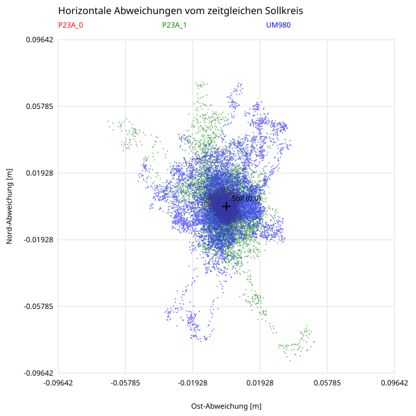
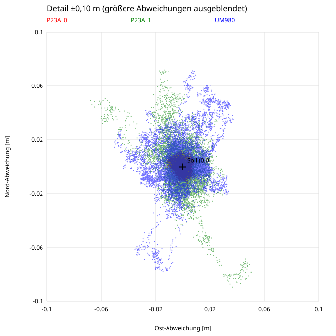
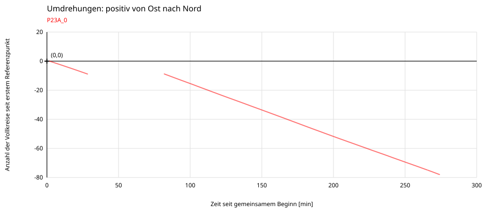
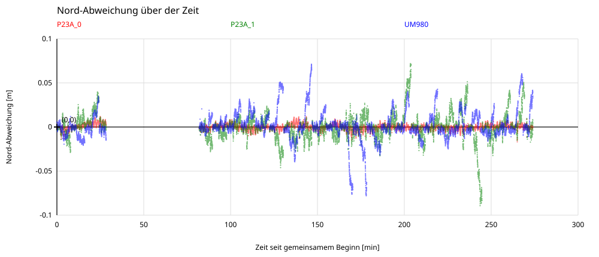
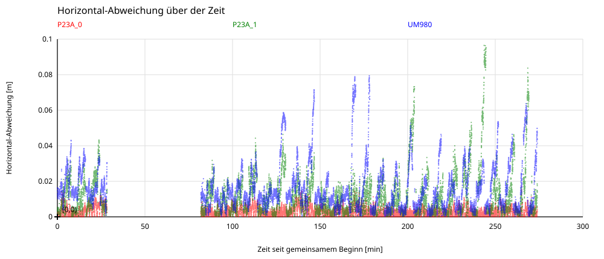

dAge ist das gemeldete GGA-Korrekturdatenalter [s]. HRMS = sqrt(Mittelwert(Ostfehler² + Nordfehler²)) je 10-s-Intervall (0,10], (10,20], …; dAge=0 zählt zum ersten Intervall. Punkte liegen beim mittleren dAge je Intervall. Die Geraden werden ungewichtet an die Intervall-HRMS-Werte angepasst, mit freiem Achsenabschnitt und nur im belegten Altersbereich; ihre Steigungen stehen in mm/s. Alle verwendbaren RTK-fixed-Epochen mit gültigem dAge sind enthalten, ohne Paarung der Receiver. dAge ist keine extern gemessene Outage-Dauer.
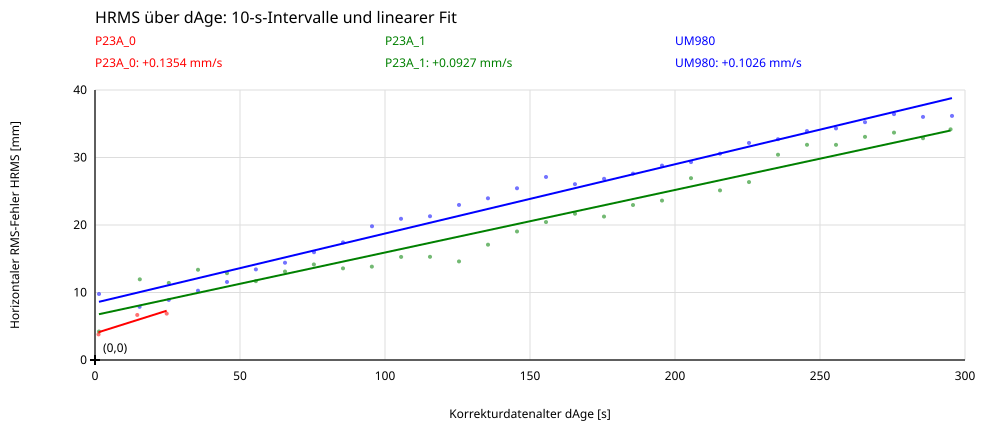
P23A_1 kommt in diesem Test bei den typischen horizontalen Abweichungen besser mit Referenzdaten-Outages zurecht als UM980 (kleinerer RMS, Median und 95%-Quantil). UM980 hat dagegen den kleineren maximalen Einzelfehler. P23A_0 dient mit kontinuierlichen Referenzdaten als Referenz und ist kein Outage-Vergleichskandidat.
Verglichen werden ausschließlich identische UTC-Epochen, an denen beide Empfänger RTK-fixed sind und beide ein Korrekturdatenalter über 10 s melden. Dies kennzeichnet veraltete Korrekturdaten, nicht extern protokollierte Schaltzeiten. Nicht-fixed-Positionen und Referenzlücken sind ausgeschlossen; das Fazit bewertet daher die Genauigkeit der verbleibenden Fixed-Lösungen, nicht die vollständige Verfügbarkeit während aller Outages.
| Receiver | Epochen | RMS [cm] | Median [cm] | 95%-Quantil [cm] | Maximum [cm] |
|---|---|---|---|---|---|
| P23A_1 | 6812 | 1.89 | 1.31 | 3.59 | 9.65 |
| UM980 | 6812 | 2.68 | 1.90 | 5.42 | 7.94 |
Radius: 0.33097 m. Mean rotation period: 169.599 s (76 complete revolutions, excluding reference gaps). UTC: 3:41:09 to 8:15:08. Date: 2026-11-03 (from UM980; the same date is assumed for P23A).
Red: P23A_0; green: P23A_1; blue: UM980; black cross: expected position. Only RTK-fixed positions (GGA quality 4) are included. The rotation plot shows the angle divided by 360° as the number of revolutions.
The reference angle is derived from P23A_0. Its tangential error cannot be measured independently; the red trace mainly shows the radial residual. There is no extrapolation or interpolation across large reference gaps and no subsequent receiver time shift. The number of complete turns during reference gaps is unknown; the unwrapped angle resumes at the nearest equivalent angle (segment number in referenz_winkel.csv).


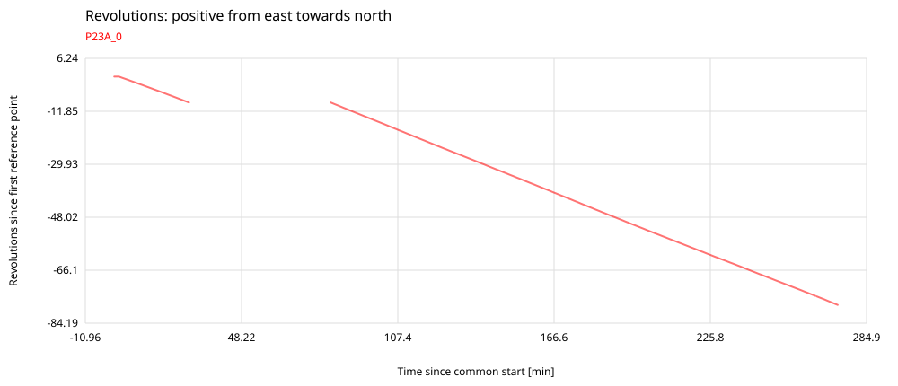
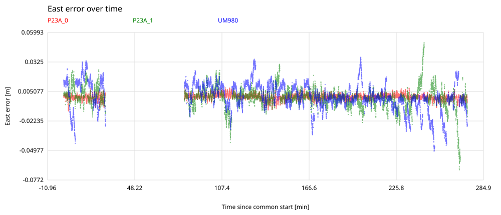

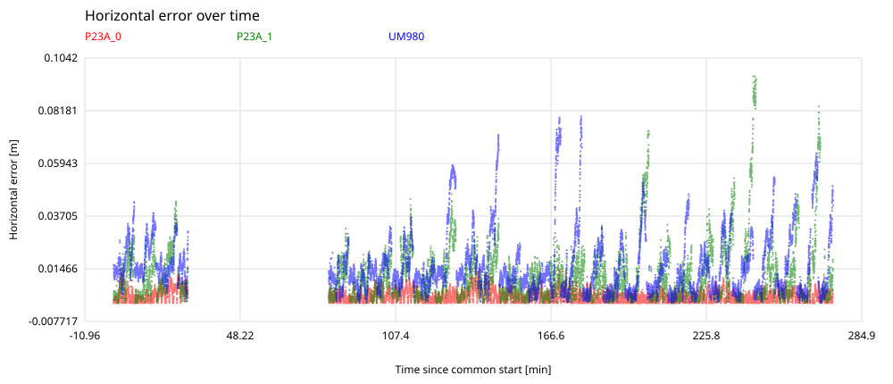
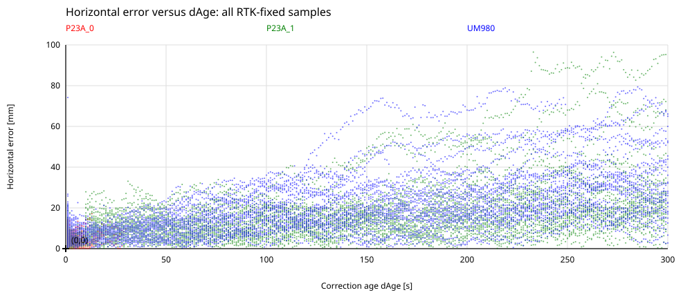
dAge is the reported GGA correction age [s]. HRMS = sqrt(mean(east error² + north error²)) per 10-s interval (0,10], (10,20], …; age zero belongs to the first interval. Points use the mean observed age in each interval. Lines use unweighted least squares on interval HRMS values with a free intercept, restricted to the observed age range; slopes are in mm/s. All usable RTK-fixed epochs with valid dAge are included, without pairing receivers. dAge is not an externally measured outage duration.

In this test, P23A_1 handles reference-data outages better than UM980 in terms of typical horizontal errors (lower RMS, median and 95th percentile). UM980 has the smaller maximum individual error. P23A_0 has continuous reference data and serves as the reference, rather than as an outage comparison candidate.
The comparison uses only identical UTC epochs where both receivers are RTK-fixed and both report a correction age greater than 10 s. This indicates stale corrections, rather than externally logged switching times. Non-fixed positions and reference gaps are excluded; the conclusion therefore assesses the accuracy of the remaining fixed solutions, not overall availability throughout all outages.
| Receiver | Epochs | RMS [cm] | Median [cm] | 95th percentile [cm] | Maximum [cm] |
|---|---|---|---|---|---|
| P23A_1 | 6812 | 1.89 | 1.31 | 3.59 | 9.65 |
| UM980 | 6812 | 2.68 | 1.90 | 5.42 | 7.94 |
半径： 0.33097 m. 平均旋转周期： 169.599 s (76 次完整旋转，已排除参考数据缺口). UTC: 3:41:09 至 8:15:08. 日期： 2026-11-03 （来自 UM980；假定 P23A 的数据采集于同一天）。
红色：P23A_0；绿色：P23A_1；蓝色：UM980；黑色十字：理论位置。 仅包含 RTK 固定解位置（GGA 质量标识为 4）。旋转图以转角除以 360°，表示旋转圈数。
参考角由 P23A_0 推导，因此无法独立测量其切向误差；红色轨迹主要表示径向残差。不进行外推，也不跨越较大的参考数据缺口进行插值，不对接收机时间进行事后平移。参考数据缺口期间的完整旋转圈数未知；缺口后展开角采用最接近的等效角继续（分段编号见 referenz_winkel.csv）。
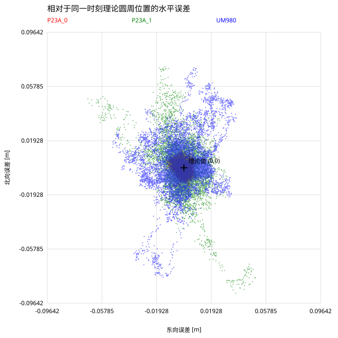
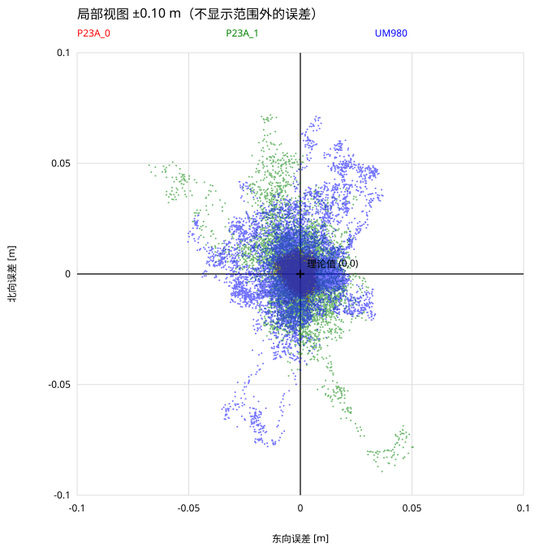
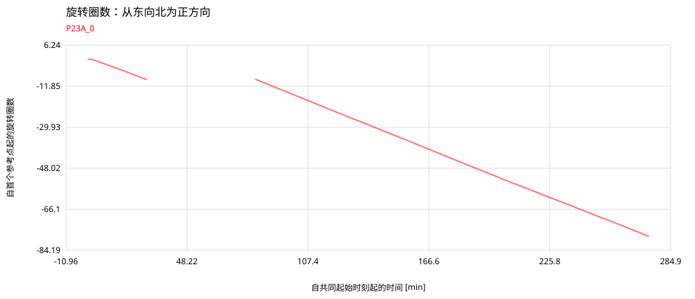
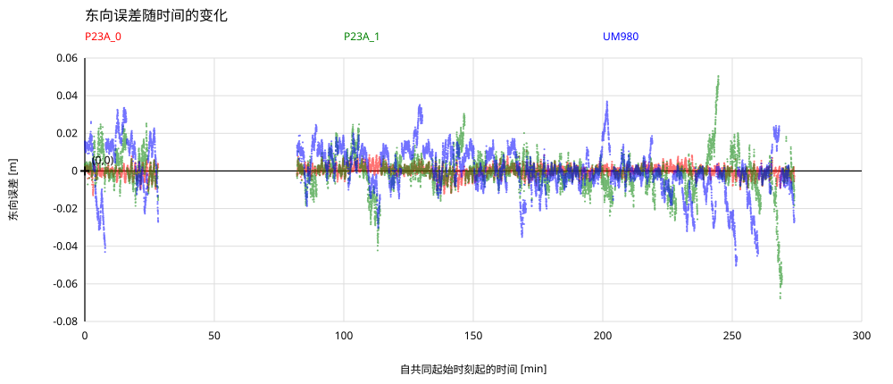

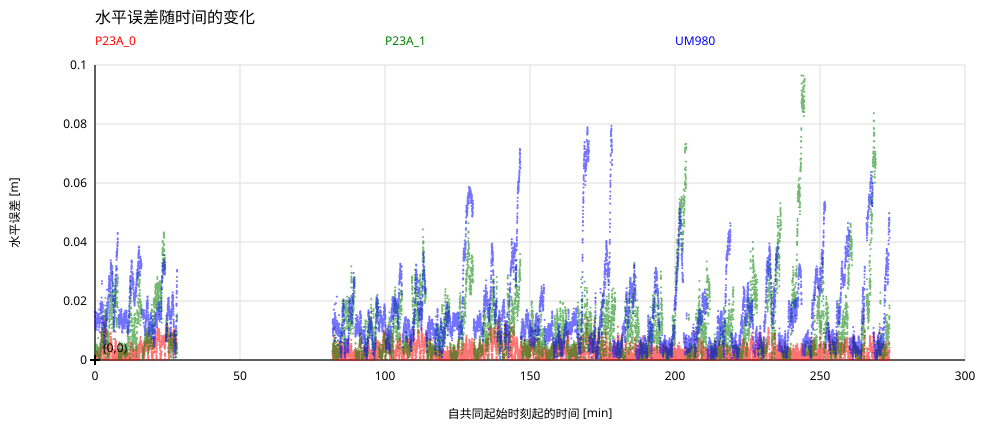
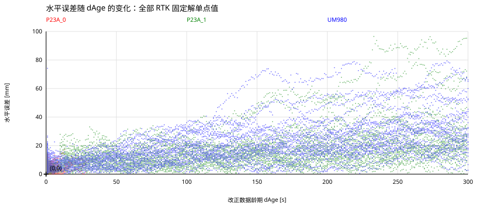
dAge 为 GGA 报告的改正数据龄期 [s]。每个 10 秒区间 (0,10]、(10,20] 等计算 HRMS = sqrt(平均值(东向误差² + 北向误差²))；零龄期计入首个区间。点的横坐标为各区间的平均龄期。对各区间 HRMS 采用不加权最小二乘直线拟合，截距自由，仅在实际龄期范围内绘制，斜率单位为 mm/s。包含具有有效 dAge 的全部可用 RTK 固定解历元，不要求接收机历元配对。dAge 并非外部测得的中断持续时间。

在本次测试中，按典型水平误差衡量，P23A_1 应对参考数据中断的表现优于 UM980（均方根、误差中位数和第 95 百分位数均更小）。但 UM980 的最大单次误差更小。P23A_0 持续接收参考数据，仅作为参考基准，不参与中断性能排名。
比较仅采用相同 UTC 历元，并要求两个接收机均为 RTK 固定解，且均报告超过 10 秒的改正数据龄期。该条件表示改正数据已过时，而非外部日志记录的实际中断切换时刻。非固定解位置及参考数据缺口均被排除，因此本结论评价的是保留的固定解精度，而非整个中断期间的完整可用性。
| 接收机 | 历元数 | 均方根 [cm] | 中位数 [cm] | 第95百分位数 [cm] | 最大值 [cm] |
|---|---|---|---|---|---|
| P23A_1 | 6812 | 1.89 | 1.31 | 3.59 | 9.65 |
| UM980 | 6812 | 2.68 | 1.90 | 5.42 | 7.94 |